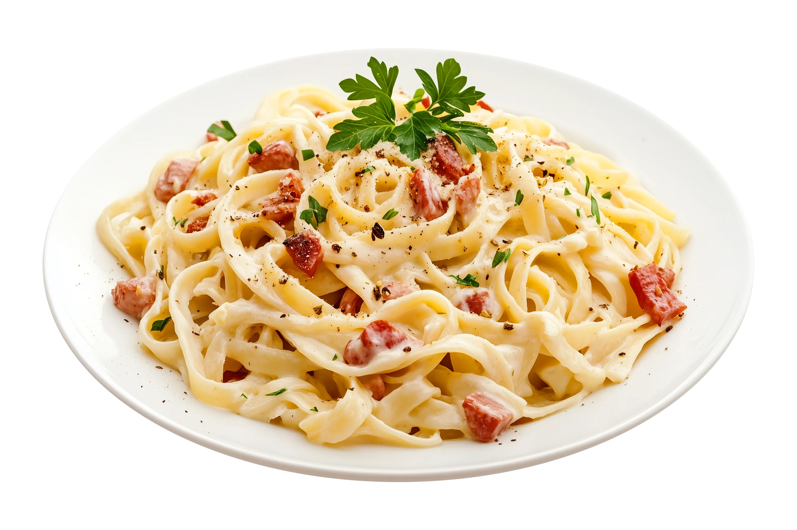

Pasta Carbonara
Tiempo: 20 minutos · Dificultad: Fácil · Porciones: 2

Preparación
- Hierve abundante agua con sal en una olla y cocina la pasta hasta que esté al dente (aproximadamente 1 o 2 minutos menos de lo que indica el paquete).
- Mientras tanto, en una sartén a fuego medio sin aceite, dora la panceta o guanciale hasta que suelte su grasa y quede bien crujiente. Apaga el fuego y reserva.
- En un tazón grande, bate las yemas, el huevo entero, el queso rallado y abundante pimienta negra hasta obtener una crema espesa.
- Extrae media taza del agua de cocción de la pasta antes de escurrirla.
- Pasa la pasta caliente directamente a la sartén con la panceta (fuera del fuego para que el huevo no se cuaje).
- Vierte la mezcla de huevo y queso sobre la pasta caliente junto con un chorrito del agua de cocción reservada. Mezcla rápidamente con movimientos envolventes hasta formar una salsa cremosa y sedosa.
- Sirve inmediatamente con extra queso rallado y abundante pimienta negra recién molida por encima.
¡Un clásico italiano cremoso sin necesidad de usar crema de leche!
Tips de nuestra comunidad
Descubre recetas, combinaciones y secretos compartidos por otros amantes de la cocina. ¿Tienes un secreto de cocina?
Compártelo con la comunidad.
El truco de oro es apagar o retirar la sartén del fuego completamente antes de agregar la mezcla de huevo; de lo contrario, terminarás con un huevo revuelto.
Guarda siempre un poco de agua con almidón de la cocción de la pasta, es la clave definitiva para ajustar la cremosidad de la salsa al emplatar.